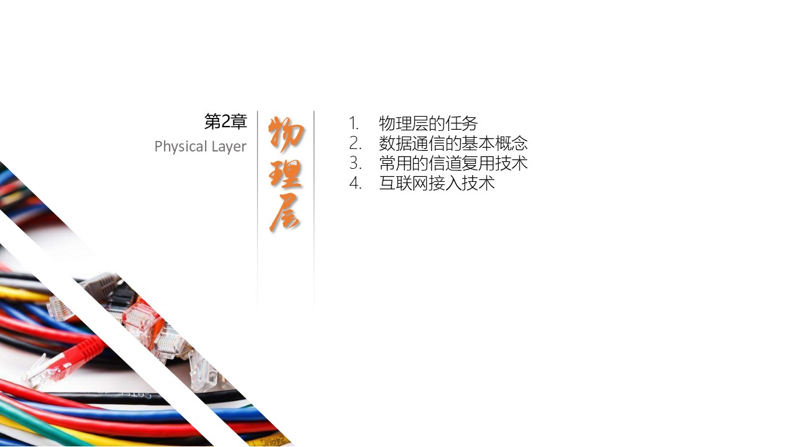
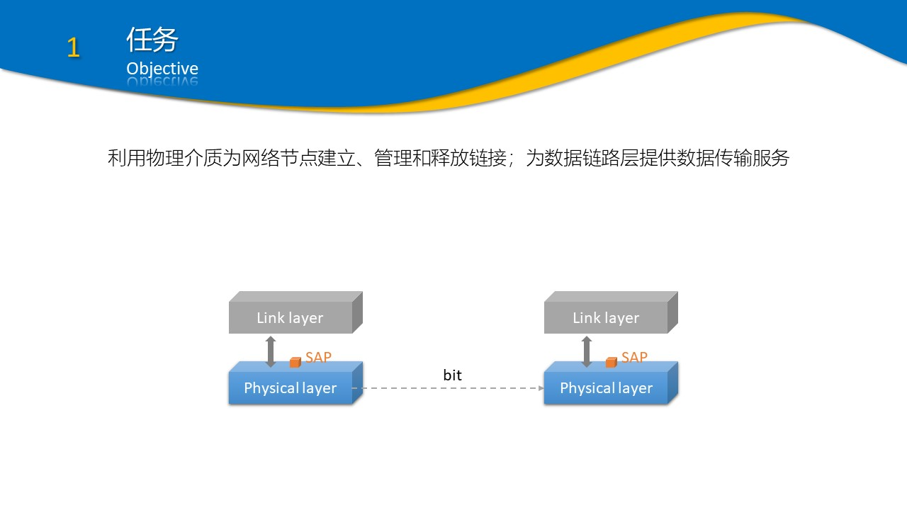
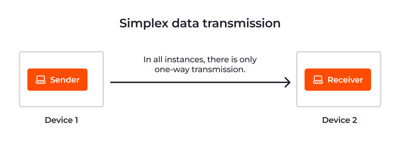
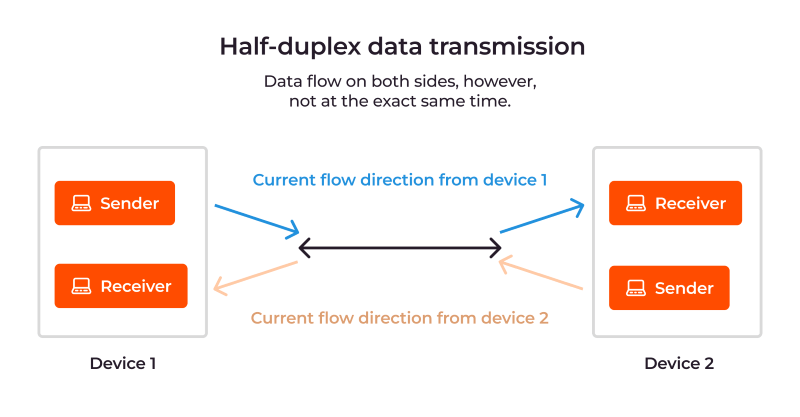
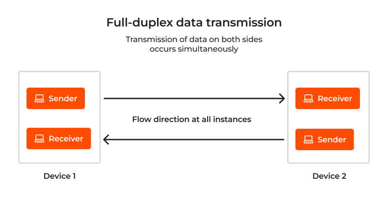

连接线/器的形状、尺寸、引脚数和排列等
接口电缆的各条线上电压的范围：什么电平代表1，什么电平代表0
接口电缆的各条线上电压表示的意义
规程特性
规定接口上各种信号线以及各种电平出现的先后顺序，即哪根信号线先动作，哪根信号线后动作



在带宽W(hz)的低通信道中，不考虑噪声影响，码元传输的最高速率是2W(码元/秒)
16个等级的振幅可以使用4bit来表示：24 = 16
每个码元为4bit
最高速率为 20000 码元/秒 = 80000 bit/s
根据香农公式，有：64 Kbps = 3 Khz * log2(1+S/N)
等式变换后。有：S/N = 264/3 - 1
= 2(63 + 1)/3 - 1
= 2(21 + 1/3) - 1
= 221*21/3 - 1
≈ 2,642,244.94
相应的分贝 = 10 * log10(2,642,244.94)
= 64.22 dB